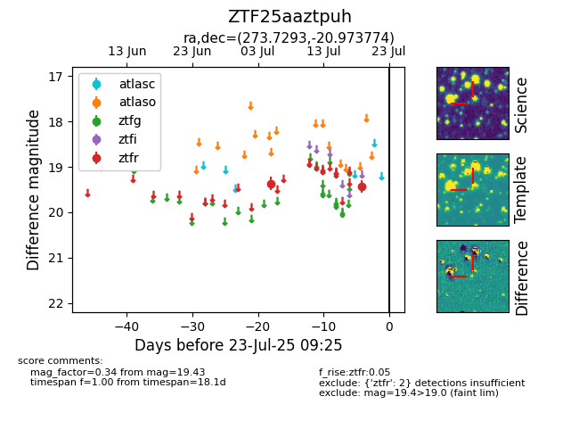

Target ZTF25aaztpuh at 2025-07-23 11:48, see:
FINK: fink-portal.org/ZTF25aaztpuh
Lasair: lasair-ztf.lsst.ac.uk/objects/ZTF25aaztpuh
ALeRCE: alerce.online/object/ZTF25aaztpuh
alt names
ZTF25aaztpuh (ztf,fink)
coordinates:
equatorial (ra, dec) = (273.7293,-20.97377)
galactic (l, b) = (10.2066,-1.79653)
photometry
last ztfr=19.43
2 ztfr detections
